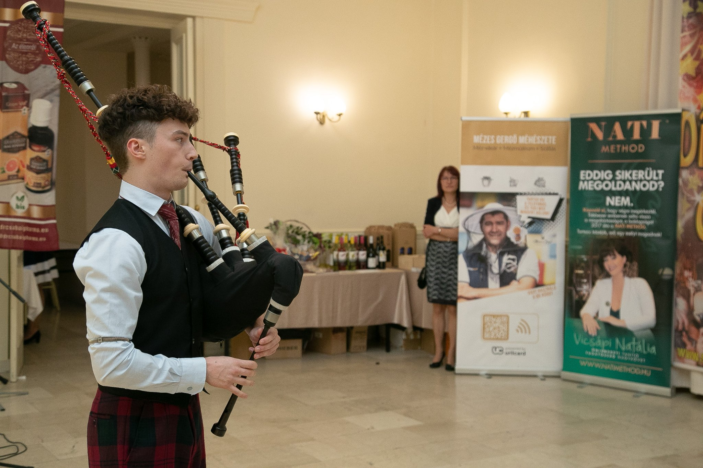
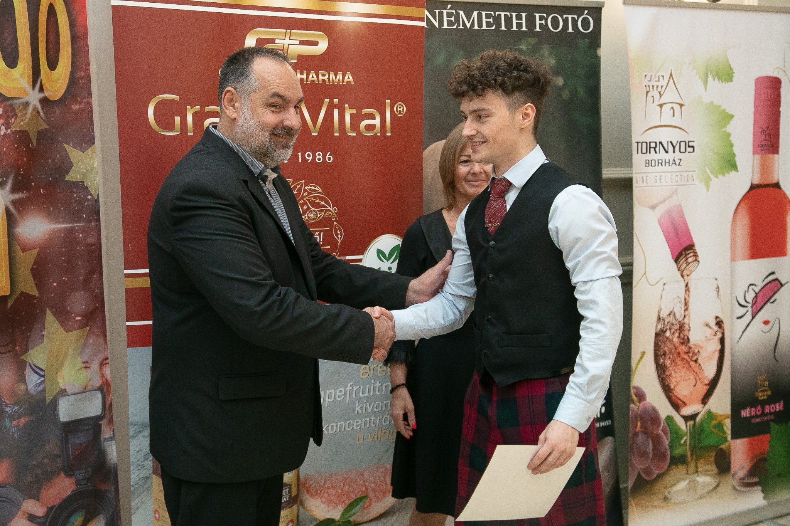
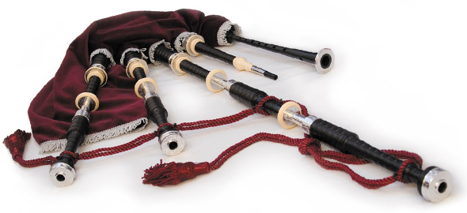
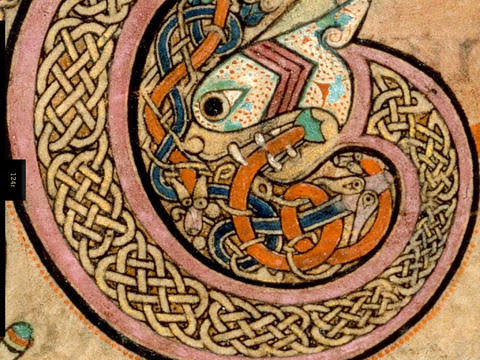

Mitől különleges a skót duda hangja?
A hangszer ereje nem csak a hangerőben van. A folyamatos bordunhang, a díszítések és a dallamvezetés együtt adják azt az ünnepélyes karaktert, amely rögtön felismerhető.
Érdeklődés a témárólGondolatok a skót duda világából: hagyomány, gyakorlás, fellépések és történetek arról, hogyan találkozik a hangszer hangja magyar közönséggel.

A hangszer ereje nem csak a hangerőben van. A folyamatos bordunhang, a díszítések és a dallamvezetés együtt adják azt az ünnepélyes karaktert, amely rögtön felismerhető.
Érdeklődés a témáról
Egy jól megválasztott dallam emlékezetes keretet adhat bevonuláshoz, köszöntéshez vagy megemlékezéshez. A repertoár mindig az alkalom hangulatához igazodik.
Tovább a cikkhez
A biztos intonáció, az egyenletes levegővezetés és a tiszta díszítések külön-külön is figyelmet kérnek. A fejlődés apró, következetes napi lépésekből áll össze.
Tovább a cikkhez
A skót duda tanulása nem rögtön a teljes hangszeren indul. Gyakorlósíp, jó tanár, alapkönyv és türelmes napi rutin kell hozzá, hogy biztos alapokra épüljön a játék.
Tovább a cikkhez
Új hangszer, használt duda, nagy készítők, európai boltok és az olcsó, pakisztáni díszdudák csapdája: mire figyelj, mielőtt pénzt adsz ki?
Tovább a cikkhez
A skót dudazene két nagy világa: a piobaireachd mély, nagy formái és a menetzenék, táncdallamok lendületes, közvetlenebb hagyománya.
Tovább a cikkhezFellépés, zenei program vagy a hangszer története kapcsán is szívesen segítek. A blog később új bejegyzésekkel bővíthető, akár eseménybeszámolókkal is.